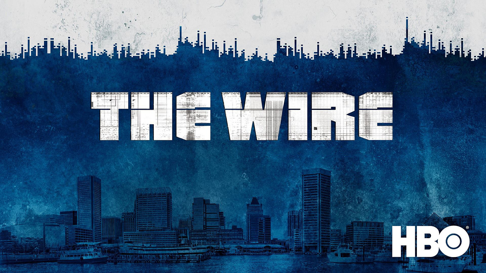
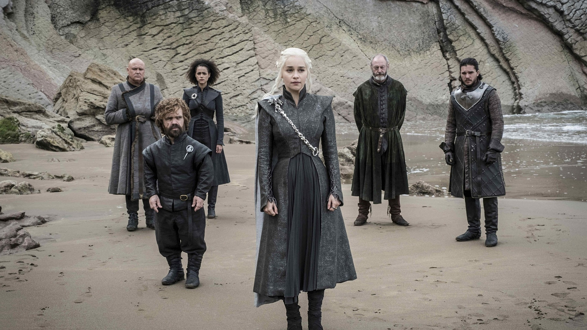
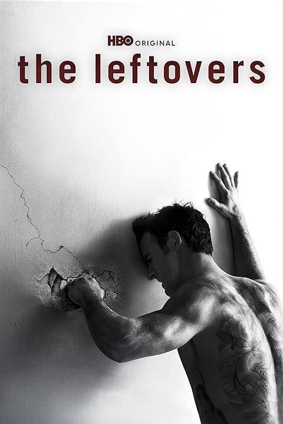
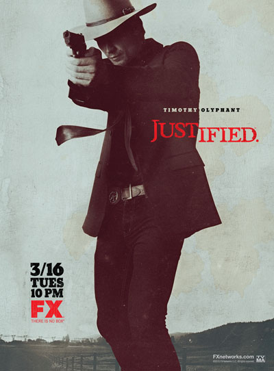

Nem tudod, mit nézz? Segítünk megtalálni a tökéletes sorozatot!
Csapatunk
Johnny Walker
Weblap szerkesztő
Rebecca Flex
Weblap Tervező
Jan Ringo
Információ gyüjtő
Kai Ringo
Weblap Moderátor
Legnépszerűbb Sorozatok
Mi tervünk:
A mi tervünk az az hogy egy olyan weblapot létrehozzunk, ahol sorozatnézőknek adunk ajánlatot hogy mit nézzenek meg. A sorozatok amelyek megjelennek a weboldalon globális vélemény alapján jöttek létre!

A drót
(2002-2008)
A sorozat a baltimore-i drogpiac világát mutatja be, egyaránt megszólaltatva a rendőrséget, a drogdílereket, a politikusokat és a média képviselőit. Egy kendőzetlenül őszinte és realisztikus történet a rendszerszintű problémákról és az amerikai nagyvárosi életről.

Trónok Harca
(2011-2019)
George R. R. Martin világhírű fantasy regényei alapján készült epikus sorozat, amely Westeros hét királyságának trónjáért folyó kíméletlen harcot mutatja be. Politikai intrikák, sárkányok és egy északról fenyegető, ősi veszély szövik át ezt a lenyűgöző történetet.
Totál szívás
(2008-2013)
Minden idők egyik legjobb bűnügyi drámája, amely egy tüdőrákkal diagnosztizált, mindennapi kémiatanár morális bukását mutatja be. Hogy anyagilag biztosítsa családja jövőjét, egy volt diákjával társulva belép a veszélyes alvilágba, és könyörtelen drogkártell-vezérré válik.
Sorozatok Véleményei

A hátrahagyottak
IMDB értékelés: 8.3/10
A Leftovers nemcsak minden idők egyik legkevésbé értékelt tévésorozata, de minden idők egyik legjobbja is! Három évvel a világ népességének 2%-ának eltűnése után játszódik, és egy New York közelében lévő kisvárosban élő emberek életét követi nyomon, azt, hogyan birkóznak meg az eseménnyel, és próbálják kitalálni, mi történik szeretteikkel. Be kell vallanom, hogy nem mindenkinek való, ha egy gyors tempójú, sok akciódús sorozatot keresel, akkor ez nem neked való. Ez minden idők egyik legjobban megírt és eljátszott sorozata. Csak el kell olvasnod a kritikákat, hogy lásd, mennyire szeretik ezt a sorozatot. Ha még nem láttad ezt a fantasztikus sorozatot, akkor tégy magadnak egy szívességet, és nézd meg amint lehet!
124 ember találta ezt hasznosnak
41 ember nem találta ezt hasznosnak

A törvény Embere
IMDB értékelés: 8.3/10
Évek óta az egyik legjobb tévésorozat, amit láttam. Engem például nem érdekelt annyira a lövöldözés (ami egyébként bőségesen van), mint a kiváló párbeszédek és a színészi játék. Különösen a színészi játék kiemelkedően jó, egyetlen karakter sem téved a szerepében, őszintén szólva, még egy kutya esetében is, ha egy jelenetben látod a sorozatot, az az érzésed támad, hogy pontosan oda való. Ami a párbeszédeket illeti, azok annyira jók, hogy ez valójában az egyetlen hibája ennek a sorozatnak. Nagyon valószínűtlennek tűnik, hogy a ravasz vidékiek ilyen hatalmas udvarias irónia és jól elhelyezett idézetek arzenáljával rendelkezzenek, egészen a jól képzett emberek határáig, mégis újra és újra a következő ember tervének dőljenek be, vagy egyszerűen a saját butaságuk kezébe kerüljenek. Mindenesetre nem tudom eléggé felszavazni ezt a sorozatot, és csak azt tudom javasolni, hogy helyezkedjetek el kényelmesen bármelyik zsíros kanapén, amitek van, és készüljetek fel arra, hogy Harlanba, Kentuckyba költöztetne
172 ember találta ezt hasznosnak
9 ember nem találta ezt hasznosnak
Rólunk Szól
IMDB értékelés: 8.7/10
Három nappal ezelőtt végre összeomlottam, és megnéztem a This Is Us-t. Azt hiszem, féltem, hogy giccses és érzelgős lesz... ami néha abszolút az is. De egy olyan sorozatot akartam nézni, ami egészséges és tisztességes... és abszolút az is. Nincs benne erőszak vagy káromkodás. Nincsenek kínos szexjelenetek. És mégis szórakoztató. Szóval igen. Most állandóan nézem a This Is Us-t a Netflixen.
Nincs igazán kedvenc karakterem (ha lenne, Kevin lenne). De van egy kedvenc színészem: Sterling Brown. Ugyan már! Ő játssza Randallt, és el tudja játszani őt heteroszexuálisan, bolondosan vagy intellektuálisan, és minden érzelmet képes egy szempillantás alatt felizgatni. Ő egy szupertehetséges színész egy nagyon tehetséges színészekből álló gárdában. Jelenleg a 3. évad végén járok, és szegény Beth (Randall felesége) nem kapta meg a titkos 24 órás magányos szünetét Randalltól és a családtól. Nagyon csalódott voltam Beth miatt, mert nagyon szüksége volt erre a szünetre.
Mindenesetre, számtalanszor sírtam már, miközben ezt a sorozatot néztem. Nagyon jó. 😂 De ha a családi viszálykodás és a családi összetartás nem az igazi, akkor érdemes kihagyni. Ennyi évbe telt, mire felfedeztem ezt a gyönyörű kis gyöngyszemet.